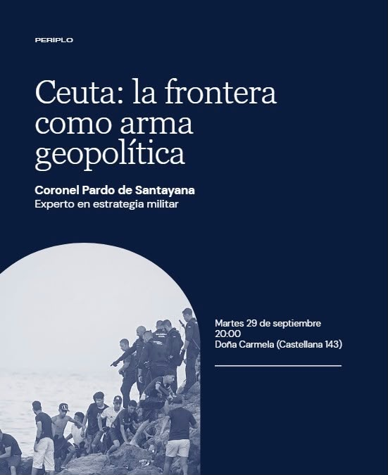
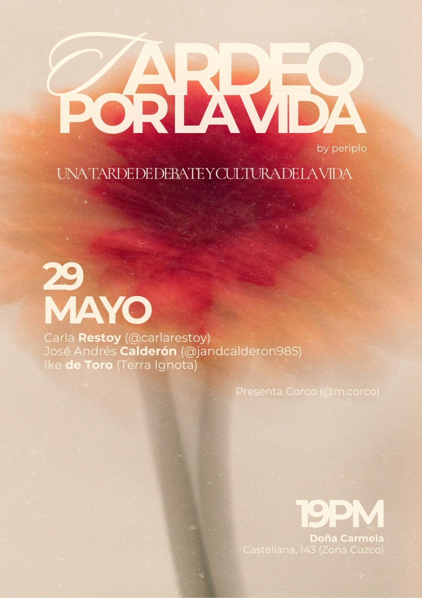
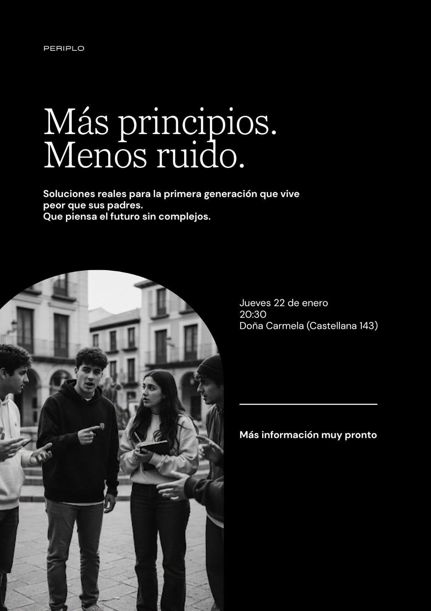

El Periplazo. España 2027: el país que queremos
Estás acostumbrado a ir a una charla como oyente. A ver el partido desde el banquillo. Esta vez no.
El Periplazo es un encuentro para pensar juntos y proponer. Con Inma Castilla de Cortázar pondremos cuatro grandes temas sobre la mesa: dignidad humana, economía, sector público y cultura.
Queremos escuchar tus propuestas, tus análisis y tus ideas. Si vienes a quedarte callado, este no es tu plan.
Organiza Periplo. Actividad dirigida a jóvenes profesionales. Nos reservamos el derecho de admisión.
Apúntate aquí (5€ - local, cervezas y picoteo) →
Ceuta: la frontera como arma geopolítica
¿Fue la entrada masiva en Ceuta una operación de guerra híbrida? ¿Qué pretendía o pretende conseguir Marruecos con la crisis de Ceuta?
Estas y otras cuestiones las abordaremos con el coronel José Pardo de Santayana, experto en estrategia militar y actual vicepresidente del Instituto de Estudios Europeos.
Organiza Periplo. Actividad dirigida a jóvenes profesionales. Nos reservamos el derecho de admisión.
Apúntate aquí (5€ - para cubrir gastos) →
Tardeo por la Vida
Tardeo de jóvenes profesionales con coloquio: Cada vida importa. Previa de la Marcha por la Vida del 31 de mayo.
Ponentes:
- Carla Restoy (@carlarestoy)
- José Andrés Calderón (@jandcalderon985)
- Ike de Toro (Terra Ignota)
Presenta: Corco (@m.corco)
Apúntate gratis →
Primer encuentro Periplo
Más principios. Menos ruido. Soluciones reales para la primera generación que vive peor que sus padres. Que piensa el futuro sin complejos.
Más información muy pronto
Próximamente más eventos
Estamos preparando más encuentros y actividades. Mantente informado uniéndote a nuestra comunidad.